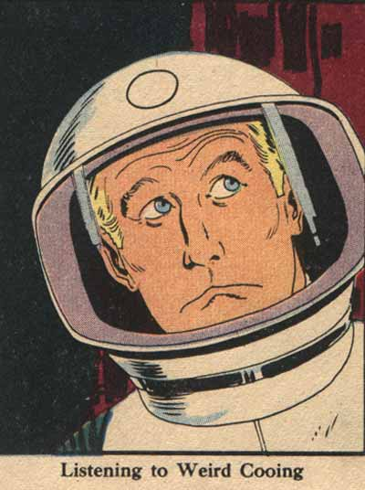

Friday, March the 31th, 2006
back to: title, date or indexes
Regular readers will be aware that Hooting Yard is, among other things, a repository of ornithological knowledge breathtaking in its sweep and depth. Imagine, then, how my heart went out to the space adventurer in the picture below, clearly unable to identify the cooing audible through the ear-grilles on his space helmet. One of the many birdsong boffins on our staff could have helped him, had he asked. The picture, by the way, is taken from the splendid Institute of Official Cheer.
